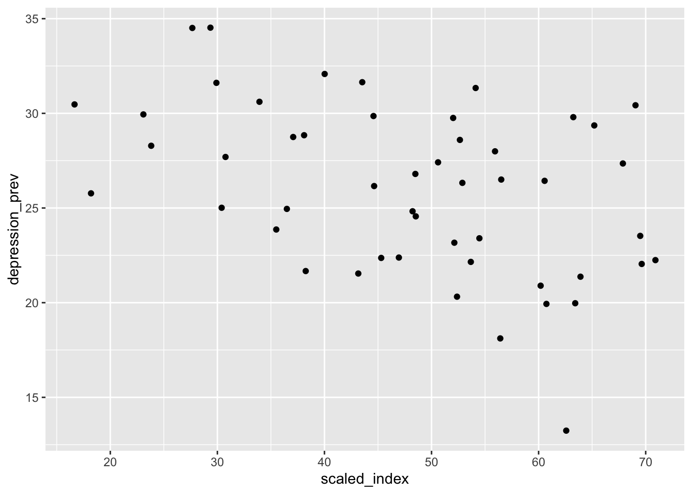

We obtained the U.S. Women, Peace and Security (WPS) Index in 2020 calculated by Georgetown Institute for Women, Peace, and Security downloaded from {here}(https://giwps.georgetown.edu/usa-index/). We import the raw data (xlsx) and extract the WPS index below:
index_data_colnames = read_excel("./data/US-Index-Data.xlsx",
sheet = "Statistical table 3 Key statis",
n_max = 0) %>%
names()
index_data = read_excel("./data/US-Index-Data.xlsx",
sheet = "Statistical table 3 Key statis",
range = "A3:L53",
col_names = index_data_colnames) %>%
janitor::clean_names()
index_data## # A tibble: 51 × 12
## overa…¹ state index…² inclu…³ justi…⁴ secur…⁵ resid…⁶ per_c…⁷ racia…⁸ urban…⁹
## <dbl> <chr> <dbl> <dbl> <dbl> <dbl> <dbl> <dbl> <dbl> <dbl>
## 1 1 Mass… 0.709 0.631 0.773 0.730 6.89e6 75258 0.8 92
## 2 2 Conn… 0.696 0.614 0.735 0.748 3.57e6 69789 0.9 88
## 3 3 Dist… 0.695 0.768 0.647 0.675 7.06e5 178442 1.2 100
## 4 4 Verm… 0.690 0.663 0.621 0.799 6.24e5 48855 0.3 38.9
## 5 5 Rhod… 0.679 0.584 0.657 0.815 1.06e6 51963 0.8 90.7
## 6 6 New … 0.652 0.667 0.622 0.669 1.36e6 57272 0.4 60.3
## 7 7 Mary… 0.639 0.719 0.548 0.663 6.05e6 61926 1.1 87.2
## 8 8 New … 0.634 0.553 0.736 0.627 1.95e7 75131 1.2 87.9
## 9 9 Maine 0.632 0.561 0.668 0.675 1.34e6 43541 0.3 38.7
## 10 10 Hawa… 0.626 0.601 0.675 0.605 1.42e6 58981 1.2 91.9
## # … with 41 more rows, 2 more variables:
## # state_government_spending_per_capitac <dbl>,
## # state_government_control_by_democratsd <dbl>, and abbreviated variable
## # names ¹overall_index_rank, ²index_score, ³inclusion_subindex_score,
## # ⁴justice_subindex_score, ⁵security_subindex_score, ⁶resident_population,
## # ⁷per_capita_real_gd_pa, ⁸racial_diversity_scoreb,
## # ⁹urban_share_of_populationWe only need the overall WPS index and the states, so we select those two columns below:
index_data = index_data %>%
select(state, index_score) %>%
mutate(state_code = c(state.abb, "DC")[match(state, c(state.name, "District of Columbia"))],
scaled_index = 100 * index_score)
index_data## # A tibble: 51 × 4
## state index_score state_code scaled_index
## <chr> <dbl> <chr> <dbl>
## 1 Massachusetts 0.709 MA 70.9
## 2 Connecticut 0.696 CT 69.6
## 3 District of Columbia 0.695 DC 69.5
## 4 Vermont 0.690 VT 69.0
## 5 Rhode Island 0.679 RI 67.9
## 6 New Hampshire 0.652 NH 65.2
## 7 Maryland 0.639 MD 63.9
## 8 New York 0.634 NY 63.4
## 9 Maine 0.632 ME 63.2
## 10 Hawaii 0.626 HI 62.6
## # … with 41 more rowsWe also obtained the per-capita GDP for each US state in 2021 from {here}(https://www.statista.com/statistics/248063/per-capita-us-real-gross-domestic-product-gdp-by-state/). We import the data below:
gdp_data = read_excel("./data/us-per-capita-gdp-2021-by-state.xlsx",
sheet = "Data",
skip = 5,
col_names = c("state", "gdp")) %>%
mutate(state_code = c(state.abb, "DC")[match(state, c(state.name, "District of Columbia"))])
gdp_data## # A tibble: 52 × 3
## state gdp state_code
## <chr> <dbl> <chr>
## 1 District of Columbia 189513 DC
## 2 New York 76365 NY
## 3 Massachusetts 76324 MA
## 4 Washington 74319 WA
## 5 California 73264 CA
## 6 Alaska 69430 AK
## 7 North Dakota 69429 ND
## 8 Connecticut 68381 CT
## 9 Colorado 64308 CO
## 10 Delaware 64187 DE
## # … with 42 more rowsNext, we obtain the data frames on state-level self-reported depression prevalence data among women, and the state-level sex difference in self-repored depression prevalence, respectively:
depr_prev_bystate_gender = brfss_design %>%
group_by(state_code, sex, depression) %>%
summarize(depression_prev = 100*survey_mean(na.rm = T, vartype = c("ci")))
depr_prev_bystate_female = depr_prev_bystate_gender %>%
filter(sex == "female", depression == "yes") %>%
select(state_code, depression_prev)## Adding missing grouping variables: `sex`depr_prev_bystate_female## # A tibble: 50 × 3
## # Groups: state_code, sex [50]
## sex state_code depression_prev
## <fct> <chr> <dbl>
## 1 female AK 24.8
## 2 female AL 28.3
## 3 female AR 29.9
## 4 female AZ 22.4
## 5 female CA 18.1
## 6 female CO 26.5
## 7 female CT 22.0
## 8 female DC 23.5
## 9 female DE 20.3
## 10 female GA 21.7
## # … with 40 more rowsdepr_prev_bystate_diff = depr_prev_bystate_gender %>%
select(state_code, depression_prev, sex, depression) %>%
filter(depression == "yes") %>%
pivot_wider(names_from = "sex",
values_from = "depression_prev") %>%
mutate(difference = female - male)
depr_prev_bystate_diff## # A tibble: 50 × 5
## # Groups: state_code [50]
## state_code depression male female difference
## <chr> <fct> <dbl> <dbl> <dbl>
## 1 AK yes 14.7 24.8 10.1
## 2 AL yes 15.6 28.3 12.7
## 3 AR yes 18.8 29.9 11.1
## 4 AZ yes 12.4 22.4 9.99
## 5 CA yes 12.0 18.1 6.11
## 6 CO yes 14.3 26.5 12.2
## 7 CT yes 13.5 22.0 8.52
## 8 DC yes 16.9 23.5 6.62
## 9 DE yes 11.5 20.3 8.84
## 10 GA yes 13.0 21.7 8.62
## # … with 40 more rowsNext, merge the WPS index data and the GDP data with the two above data frames, respectively:
merged_female_depr_eco = list(depr_prev_bystate_female, index_data, gdp_data) %>%
reduce(left_join, by='state_code')
merged_female_depr_eco## # A tibble: 50 × 8
## # Groups: state_code, sex [50]
## sex state_code depression_prev state.x index…¹ scale…² state.y gdp
## <fct> <chr> <dbl> <chr> <dbl> <dbl> <chr> <dbl>
## 1 female AK 24.8 Alaska 0.482 48.2 Alaska 69430
## 2 female AL 28.3 Alabama 0.238 23.8 Alabama 41664
## 3 female AR 29.9 Arkansas 0.231 23.1 Arkans… 40764
## 4 female AZ 22.4 Arizona 0.453 45.3 Arizona 47779
## 5 female CA 18.1 California 0.564 56.4 Califo… 73264
## 6 female CO 26.5 Colorado 0.565 56.5 Colora… 64308
## 7 female CT 22.0 Connecticut 0.696 69.6 Connec… 68381
## 8 female DC 23.5 District of… 0.695 69.5 Distri… 189513
## 9 female DE 20.3 Delaware 0.524 52.4 Delawa… 64187
## 10 female GA 21.7 Georgia 0.382 38.2 Georgia 53270
## # … with 40 more rows, and abbreviated variable names ¹index_score,
## # ²scaled_indexThe following scatterplot shows that there might be a negative association between the depression prevalence among women and the WPS index:
merged_female_depr_eco %>%
ggplot(aes(x = scaled_index, y = depression_prev)) +
geom_point()
We check if the association above is significant by running a multiple linear regression of Female depression prevalence in each state on the WPS index in each state:
index_m11 = lm(depression_prev ~ scaled_index, data = merged_female_depr_eco)
summary(index_m11) %>% broom::tidy()## # A tibble: 2 × 5
## term estimate std.error statistic p.value
## <chr> <dbl> <dbl> <dbl> <dbl>
## 1 (Intercept) 32.4 2.00 16.2 4.24e-21
## 2 scaled_index -0.134 0.0401 -3.35 1.58e- 3We check if the association between state-level prevalence of self-reported depression and the WPS index is still statistically significant after adjusting for state per-capita GDP:
index_m12 = lm(depression_prev ~ scaled_index + gdp, data = merged_female_depr_eco)
summary(index_m12) %>% broom::tidy()## # A tibble: 3 × 5
## term estimate std.error statistic p.value
## <chr> <dbl> <dbl> <dbl> <dbl>
## 1 (Intercept) 33.0 2.14 15.4 5.73e-20
## 2 scaled_index -0.119 0.0454 -2.62 1.18e- 2
## 3 gdp -0.0000223 0.0000303 -0.734 4.66e- 1